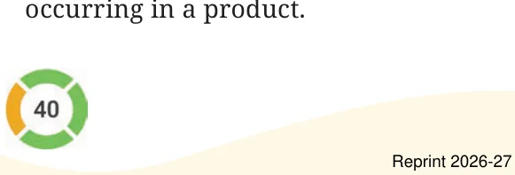

Let us understand what happens when we change the numbers occurring in a product.

Example 17: Given \(53 \times 18 = 954\). Find out \(63 \times 18\).
As \(63 \times 18\) means 63 times 18,
\(63 \times 18 = (53 + 10) \times 18\)
\(= 53 \times 18 + 10 \times 18\)
\(= 954 + 180\)
\(= 1134\).
Example 18: Find an effective way of evaluating \(97 \times 25\).
\(97 \times 25\) means 97 times 25.
We can write it as \((100 - 3) \times 25\)
We know that this is the same as the difference of 100 times 25 and 3 times 25:
\(97 \times 25 = 100 \times 25 - 3 \times 25\)
Find this value.
Use this method to find the following products:
- \(95 \times 8\)
- \(104 \times 15\)
- \(49 \times 50\)
Is this quicker than the multiplication procedure you use generally?
Which other products might be quicker to find like the ones above?